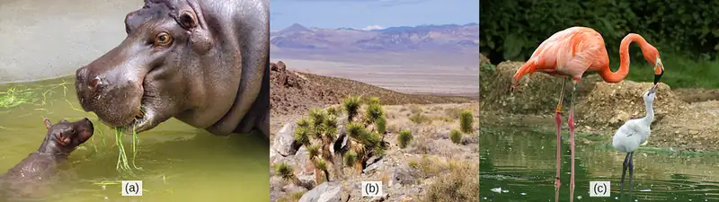
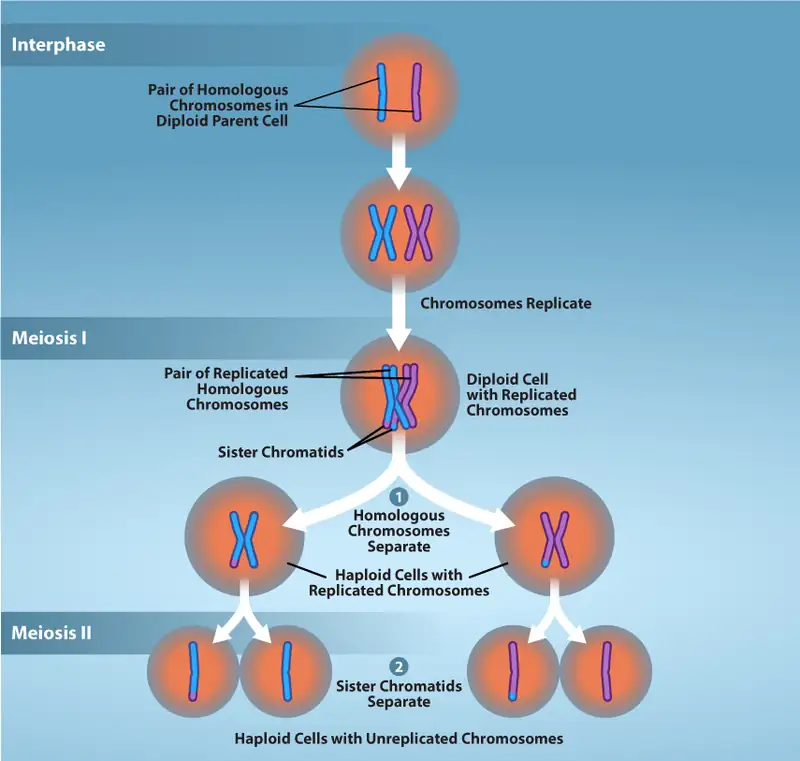
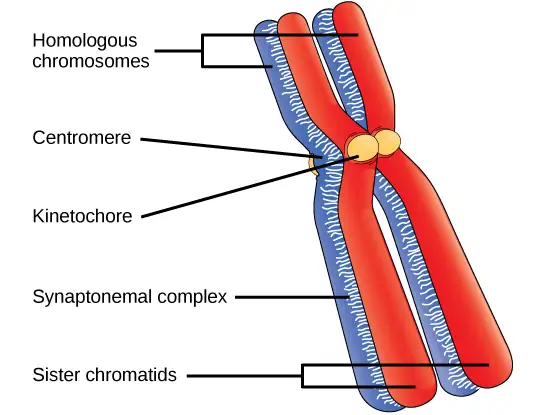
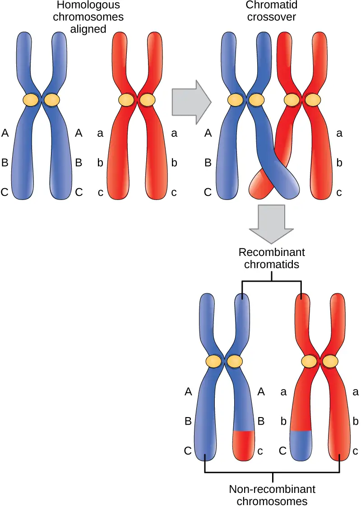
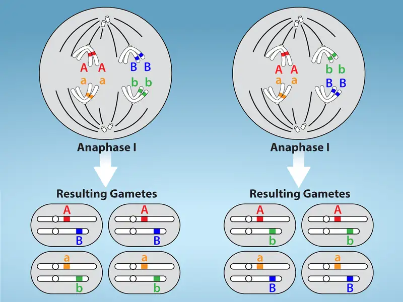
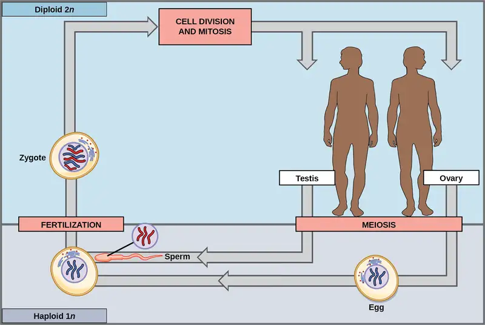
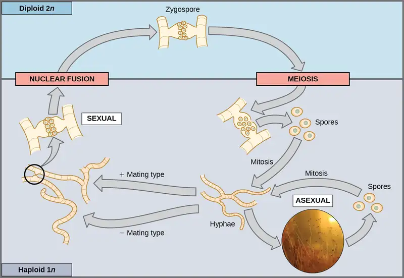
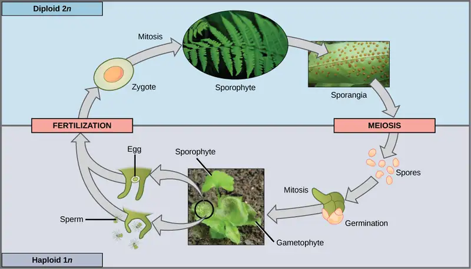

Chapter 11: Meiosis and Sexual Reproduction¶
Introduction¶

The ability to reproduce is a basic characteristic of all organisms: Hippopotamuses give birth to hippopotamus calves; Joshua trees produce seeds from which Joshua tree seedlings emerge; and adult flamingos lay eggs that hatch into flamingo chicks. However, unlike the organisms shown above, offspring may or may not resemble their parents. For example, in the case of most insects such as butterflies (with a complete metamorphosis), the larval forms rarely resemble the adult forms.
Although many unicellular organisms and a few multicellular organisms can produce genetically identical clones of themselves through asexual reproduction, many single-celled organisms and most multicellular organisms reproduce regularly using another method—sexual reproduction. This highly evolved method involves the production by parents of two haploid cells and the fusion of two haploid cells to form a single, genetically recombined diploid cell—a genetically unique organism. In almost all sexually reproducing species, these two haploid cells differ in size, with the smaller cell called “male” and the larger one called “female." These haploid cells are produced by a type of cell division called meiosis. Sexual reproduction, involving both meiosis and fertilization, introduces variation into offspring that may account for the evolutionary success of sexual reproduction. The vast majority of eukaryotic organisms, both multicellular and unicellular, can or must employ some form of meiosis and fertilization to reproduce.
In most plants and animals the zygote formed by fertilization, through thousands of rounds of mitotic cell division, will develop into an adult organism.
11.1 The Process of Meiosis¶
Learning Objectives
By the end of this section, you will be able to do the following:
- Describe the behavior of chromosomes during meiosis, and the differences between the first and second meiotic divisions
- Describe the cellular events that take place during meiosis
- Explain the differences between meiosis and mitosis
- Explain the mechanisms within the meiotic process that produce genetic variation among the haploid gametes
Sexual reproduction requires the union of two specialized cells, called gametes, each of which contains one set of chromosomes. When gametes unite, they form a zygote, or fertilized egg that contains two sets of chromosomes. (Note: Cells that contain one set of chromosomes are called haploid; cells containing two sets of chromosomes are called diploid.) If the reproductive cycle is to continue for any sexually reproducing species, then the diploid cell must somehow reduce its number of chromosome sets to produce haploid gametes; otherwise, the number of chromosome sets will double with every future round of fertilization. Therefore, sexual reproduction requires a nuclear division that reduces the number of chromosome sets by half.
Most animals and plants and many unicellular organisms are diploid and therefore have two sets of chromosomes. In each somatic cell of the organism (all cells of a multicellular organism except the gametes or reproductive cells), the nucleus contains two copies of each chromosome, called homologous chromosomes. Homologous chromosomes are matched pairs containing the same genes in identical locations along their lengths. Diploid organisms inherit one copy of each homologous chromosome from each genetic contributor.
Meiosis is the nuclear division that forms haploid cells from diploid cells, and it employs many of the same cellular mechanisms as mitosis. However, as you have learned, mitosis produces daughter cells whose nuclei are genetically identical to the original parent nucleus. In mitosis, both the parent and the daughter nuclei are at the same “ploidy level”—diploid in the case of most multicellular animals. Plants use mitosis to grow as sporophytes, and to grow and produce eggs and sperm as gametophytes; so they use mitosis for both haploid and diploid cells (as well as for all other ploidies). In meiosis, the starting nucleus is always diploid and the daughter nuclei that result are haploid. To achieve this reduction in chromosome number, meiosis consists of one round of chromosome replication followed by two rounds of nuclear division. Because many events that occur during each of the division stages are analogous to the events of mitosis, the same stage names are assigned. However, because there are two rounds of division, the major process and the stages are designated with a “I” or a “II.” Thus, meiosis I is the first round of meiotic division and consists of prophase I, prometaphase I, and so on. Likewise, Meiosis II (during which the second round of meiotic division takes place) includes prophase II, prometaphase II, and so on.

Meiosis I¶
Meiosis is preceded by an interphase consisting of G1, S, and G2 phases, which are nearly identical to the phases preceding mitosis. The G1 phase (the “first gap phase”) is focused on cell growth. During the S phase—the second phase of interphase—the cell copies or replicates the DNA of the chromosomes. Finally, in the G2 phase (the “second gap phase”) the cell undergoes the final preparations for meiosis.
During DNA duplication in the S phase, each chromosome is replicated to produce two identical copies—sister chromatids that are held together at the centromere by cohesin proteins, which hold the chromatids together until anaphase II. (Note: these chromosome copies are called sister chromatids regardless of whether they are in a female gamete or a male gamete.)
Prophase I¶
Early in prophase I, before the chromosomes can be seen clearly with a microscope, the homologous chromosomes are attached at their tips to the nuclear envelope by proteins. As the nuclear envelope begins to break down, the proteins associated with homologous chromosomes bring the pair closer together. Recall that in mitosis, homologous chromosomes do not pair together. The synaptonemal complex, a lattice of proteins between the homologous chromosomes, first forms at specific locations and then spreads outward to cover the entire length of the chromosomes. The tight pairing of the homologous chromosomes is called synapsis. In synapsis, the genes on the chromatids of the homologous chromosomes are aligned precisely with each other. The synaptonemal complex supports the exchange of chromosomal segments between homologous nonsister chromatids—a process called crossing over. Crossing over can be observed visually after the exchange as chiasmata (singular = chiasma) (Figure 11.3).
In humans, even though the X and Y sex chromosomes are not completely homologous (that is, most of their genes differ), there is a small region of homology that allows the X and Y chromosomes to pair up during prophase I. A partial synaptonemal complex develops only between the regions of homology.

Located at intervals along the synaptonemal complex are large protein assemblies called recombination nodules. These assemblies mark the points of later chiasmata and mediate the multistep process of crossover—or genetic recombination—between the nonsister chromatids. Near the recombination nodule, the double-stranded DNA of each chromatid is cleaved, the cut ends are modified, and a new connection is made between the nonsister chromatids. As prophase I progresses, the synaptonemal complex begins to break down and the chromosomes begin to condense. When the synaptonemal complex is gone, the homologous chromosomes remain attached to each other at the centromere and at chiasmata. The chiasmata remain until anaphase I. The number of chiasmata varies according to the species and the length of the chromosome. There must be at least one chiasma per chromosome for proper separation of homologous chromosomes during meiosis I, but there may be as many as 25. Following crossover, the synaptonemal complex breaks down and the cohesin connection between homologous pairs is removed. At the end of prophase I, the pairs are held together only at the chiasmata (Figure 11.4). These pairs are called tetrads because a total of four sister chromatids of each pair of homologous chromosomes are now visible.
The crossover events are the first source of genetic variation in the nuclei produced by meiosis. A single crossover event between homologous nonsister chromatids leads to a reciprocal exchange of equivalent DNA between an egg-derived chromosome and a sperm-derived chromosome. When a recombinant sister chromatid is moved into a gamete cell it will carry a combination of maternal and paternal genes that did not exist before the crossover. Crossover events can occur almost anywhere along the length of the synapsed chromosomes. Different cells undergoing meiosis will therefore produce different recombinant chromatids, with varying combinations of maternal and parental genes. Multiple crossovers in an arm of the chromosome have the same effect, exchanging segments of DNA to produce genetically recombined chromosomes.

Prometaphase I¶
The key event in prometaphase I is the attachment of the spindle fiber microtubules to the kinetochore proteins at the centromeres. Kinetochore proteins are multiprotein complexes that bind the centromeres of a chromosome to the microtubules of the mitotic spindle. Microtubules grow from microtubule-organizing centers (MTOCs). In animal cells, MTOCs are centrosomes located at opposite poles of the cell. The microtubules from each pole move toward the middle of the cell and attach to one of the kinetochores of the two fused homologous chromosomes. Each member of the homologous pair attaches to a microtubule extending from opposite poles of the cell so that in the next phase, the microtubules can pull the homologous pair apart. A spindle fiber that has attached to a kinetochore is called a kinetochore microtubule. At the end of prometaphase I, each tetrad is attached to microtubules from both poles, with one homologous chromosome facing each pole. The homologous chromosomes are still held together at the chiasmata. In addition, the nuclear membrane has broken down entirely.
Metaphase I¶
During metaphase I, the homologous chromosomes are arranged at the metaphase plate—roughly in the midline of the cell, with the kinetochores facing opposite poles. Each homologous pair is oriented randomly at the equator. For example, if the two homologous members of chromosome 1 are labeled a and b, then the chromosomes could line up a-b or b-a. This is important in determining the genes carried by a gamete, as each will only receive one of the two homologous chromosomes. (Recall that homologous chromosomes are not identical. They contain different versions of the same genes, and after recombination during crossing over, each gamete will have a unique genetic makeup that has never existed before.)
The randomness in the alignment of recombined chromosomes at the metaphase plate, coupled with the crossing over events between nonsister chromatids, are responsible for much of the genetic variation in the offspring. To clarify this further, remember that the homologous chromosomes of a sexually reproducing organism are originally inherited as two separate sets, one from each parent. Using humans as an example, one set of 23 chromosomes is present in the egg cell, often called maternal chromosomes because the genetic contributor is often the mother. The other set of 23 chromosomes is contained in the sperm, and the genetic contributor is called a father who provides the paternal chromosomes. Every cell of the multicellular offspring has copies of the original two sets of homologous chromosomes. When the offspring human creates their own gametes through meiosis, the two sets of chromosomes will be rearranged. In prophase I of meiosis, the homologous chromosomes form the tetrads. In metaphase I, these pairs line up at the midway point between the two poles of the cell to form the metaphase plate. Because there is an equal chance that a microtubule fiber will encounter a maternally or paternally inherited chromosome, the arrangement of the tetrads at the metaphase plate is random. Thus, any maternally inherited chromosome may face either pole. Likewise, any paternally inherited chromosome may also face either pole. The orientation of each tetrad is independent of the orientation of the other 22 tetrads.
This event—the random (or independent) assortment of homologous chromosomes at the metaphase plate—is the second mechanism that introduces variation into the gametes or spores. In each cell that undergoes meiosis, the arrangement of the tetrads is different. The number of variations is dependent on the number of chromosomes making up a set. There are two possibilities for orientation at the metaphase plate; the possible number of alignments therefore equals 2n in a diploid cell, where n is the number of chromosomes per haploid set. Humans have 23 chromosome pairs, which results in over eight million (223) possible genetically-distinct gametes just from the random alignment of chromosomes at the metaphase plate. This number does not include the variability that was previously produced by crossing over between the nonsister chromatids. Given these two mechanisms, it is highly unlikely that any two haploid cells resulting from meiosis will have the same genetic composition (Figure 11.5).
To summarize, meiosis I creates genetically diverse gametes in two ways. First, during prophase I, crossover events between the nonsister chromatids of each homologous pair of chromosomes generate recombinant chromatids with new combinations of maternal and paternal genes. Second, the random assortment of tetrads on the metaphase plate produces unique combinations of maternal and paternal chromosomes that will make their way into the gametes.

Anaphase I¶
In anaphase I, the microtubules pull the linked chromosomes apart. The sister chromatids remain tightly bound together at the centromere. The chiasmata are broken in anaphase I as the microtubules attached to the fused kinetochores pull the homologous chromosomes apart (Figure 11.6).
Telophase I and Cytokinesis¶
In telophase, the separated chromosomes arrive at opposite poles. The remainder of the typical telophase events may or may not occur, depending on the species. In some organisms, the chromosomes “decondense” and nuclear envelopes form around the separated sets of chromatids produced during telophase I. In other organisms, cytokinesis—the physical separation of the cytoplasmic components into two daughter cells—occurs without reformation of the nuclei. In nearly all species of animals and some fungi, cytokinesis separates the cell contents via a cleavage furrow (constriction of the actin ring that leads to cytoplasmic division). In plants, a cell plate is formed during cell cytokinesis by Golgi vesicles fusing at the metaphase plate. This cell plate will ultimately lead to the formation of cell walls that separate the two daughter cells.
Two haploid cells are the result of the first meiotic division of a diploid cell. The cells are haploid because at each pole, there is just one of each pair of the homologous chromosomes. Therefore, only one full set of the chromosomes is present. This is why the cells are considered haploid—there is only one chromosome set, even though each chromosome still consists of two sister chromatids. Recall that sister chromatids are merely duplicates of one of the two homologous chromosomes (except for changes that occurred during crossing over). In meiosis II, these two sister chromatids will separate, creating four haploid daughter cells.
Interactive
Watch this video about meiosis to review the process.
Meiosis II¶
In some species, cells enter a brief interphase, or interkinesis, before entering meiosis II. Interkinesis lacks an S phase, so chromosomes are not duplicated. The two cells produced in meiosis I go through the events of meiosis II in synchrony. During meiosis II, the sister chromatids within the two daughter cells separate, forming four new haploid gametes. The mechanics of meiosis II are similar to mitosis, except that each dividing cell has only one set of homologous chromosomes, each with two chromatids. Therefore, each cell has half the number of sister chromatids to separate out as a diploid cell undergoing mitosis. In terms of chromosomal content, cells at the start of meiosis II are similar to haploid cells in G2, preparing to undergo mitosis.
Prophase II¶
If the chromosomes decondensed in telophase I, they condense again. If nuclear envelopes were formed, they fragment into vesicles. The MTOCs that were duplicated during interkinesis move away from each other toward opposite poles, and new spindles are formed.
Prometaphase II¶
The nuclear envelopes are completely broken down, and the spindle is fully formed. Each sister chromatid forms an individual kinetochore that attaches to microtubules from opposite poles.
Metaphase II¶
The sister chromatids are maximally condensed and aligned at the equator of the cell.
Anaphase II¶
The sister chromatids are pulled apart by the kinetochore microtubules and move toward opposite poles. Nonkinetochore microtubules elongate the cell.
![This illustration compares chromosome alignment in meiosis I and meiosis II. In prophase 1, homologous pairs of chromosomes are held together by chiasmata. In metaphase 1, homologous chromosome pairs line up at the metaphase plate. In anaphase 1, the homologous pair separates and the connections at the chiasmata are broken, but the sister chromatids remain attached at the centromere. In Telophase 1, a cleavage furrow forms. In prophase 2, the sister chromatids are held together at the centromere. In metaphase 2, single chromosomes (not pairs) line up at the cell's midpoint. In anaphase 2, the centromere connections are broken and the sister chromatids separate. In telophase 2 the haploid daughter cells are forming.](img/figure-11-01-04.webp)
Telophase II and Cytokinesis¶
The chromosomes arrive at opposite poles and begin to decondense. Nuclear envelopes form around the chromosomes. If the parent cell was diploid, as is most commonly the case, then cytokinesis now separates the two cells into four unique haploid cells. The cells produced are genetically unique because of the random assortment of paternal and maternal homologs and because of the recombination of maternal and paternal segments of chromosomes (with their sets of genes) that occurs during crossover. The entire process of meiosis is outlined in Figure 11.7.
![This illustration outlines the stages of meiosis. In interphase, before meiosis begins, the chromosomes are duplicated. Meiosis I then proceeds through several stages. In prophase I, the chromosomes begin to condense and the nuclear envelope fragments. Homologous pairs of chromosomes line up, and chiasmata form between them. Crossing over occurs at the chiasmata. Spindle fibers emerge from the centrosomes. In prometaphase I, homologous chromosomes attach to the spindle microtubules. In metaphase I, homologous chromosomes line up at the metaphase plate. In anaphase I, the spindle microtubules pull the homologous pairs of chromosomes apart. In telophase I and cytokinesis, the sister chromatids arrive at the poles of the cell and begin to decondense. The nuclear envelope begins to form again, and cell division occurs. Meiosis II then proceeds through several stages. In prophase II, the sister chromatids condense and the nuclear envelope fragments. A new spindle begins to form. In prometaphase II, the sister chromatids become attached to the kinetochore. In metaphase II, the sister chromatids line up at the metaphase plate. In anaphase II, the sister chromatids are pulled apart by the shortening spindles. In telophase II and cytokinesis, the nuclear envelope forms again and cell division occurs, resulting in four haploid daughter cells.](img/figure-11-01-05.webp)
Comparing Meiosis and Mitosis¶
Mitosis and meiosis are both forms of division of the nucleus in eukaryotic cells. They share some similarities, but also exhibit a number of distinct processes that lead to very different outcomes (Figure 11.8). Mitosis is a single nuclear division that results in two nuclei that are usually partitioned into two new cells. The nuclei resulting from a mitotic division are genetically identical to the original nucleus. They have the same number of sets of chromosomes: one set in the case of haploid cells and two sets in the case of diploid cells. In contrast, meiosis consists of two nuclear divisions resulting in four nuclei that are usually partitioned into four new, genetically distinct cells. The four nuclei produced during meiosis are not genetically identical, and they contain one chromosome set only. This is half the number of chromosome sets of the original cell, which is diploid.
The main differences between mitosis and meiosis occur in meiosis I, which is a very different nuclear division than mitosis. In meiosis I, the homologous chromosome pairs physically meet and are bound together with the synaptonemal complex. Following this, the chromosomes develop chiasmata and undergo crossover between nonsister chromatids. In the end, the chromosomes line up along the metaphase plate as tetrads—with kinetochore fibers from opposite spindle poles attached to each kinetochore of a homolog to form a tetrad. All of these events occur only in meiosis I.
When the chiasmata resolve and the tetrad is broken up with the homologous chromosomes moving to one pole or another, the ploidy level—the number of sets of chromosomes in each future nucleus—has been reduced from two to one. For this reason, meiosis I is referred to as a reductional division. There is no such reduction in ploidy level during mitosis.
Meiosis II is analogous to a mitotic division. In this case, the duplicated chromosomes (only one set of them) line up on the metaphase plate with divided kinetochores attached to kinetochore fibers from opposite poles. During anaphase II, as in mitotic anaphase, the kinetochores divide and one sister chromatid—now referred to as a chromosome—is pulled to one pole while the other sister chromatid is pulled to the other pole. If it were not for the fact that there had been crossover, the two products of each individual meiosis II division would be identical (as in mitosis). Instead, they are different because there has always been at least one crossover per chromosome. Meiosis II is not a reduction division because although there are fewer copies of the genome in the resulting cells, there is still one set of chromosomes, as there was at the end of meiosis I.
![This illustration compares meiosis and mitosis. In meiosis, there are two rounds of cell division, whereas there is only one round of cell division in mitosis. In both mitosis and meiosis, DNA synthesis occurs during S phase. Synapsis of homologous chromosomes occurs in prophase I of meiosis, but does not occur in mitosis. Crossover of chromosomes occurs in prophase I of meiosis, but does not occur in mitosis. Homologous pairs of chromosomes line up at the metaphase plate during metaphase I of meiosis, but not during mitosis. Sister chromatids line up at the metaphase plate during metaphase II of meiosis and metaphase of mitosis. The result of meiosis is four haploid daughter cells, and the result of mitosis is two diploid daughter cells.](img/figure-11-01-06.webp)
Evolution Connection: The Mystery of the Evolution of Meiosis
Some characteristics of organisms are so widespread and fundamental that it is sometimes difficult to remember that they evolved like other simple traits. Meiosis is such an extraordinarily complex series of cellular events that biologists have had trouble testing hypotheses concerning how it may have evolved. Although meiosis is inextricably entwined with sexual reproduction and its advantages and disadvantages, it is important to separate the questions of the evolution of meiosis and the evolution of sex, because early meiosis may have been advantageous for different reasons than it is now. Thinking outside the box and imagining what the early benefits from meiosis might have been is one approach to uncovering how it may have evolved.
Meiosis and mitosis share obvious cellular processes, and it makes sense that meiosis evolved from mitosis. The difficulty lies in the clear differences between meiosis I and mitosis. Adam Wilkins and Robin Holliday1 summarized the unique events that needed to occur for the evolution of meiosis from mitosis. These steps are homologous chromosome pairing and synapsis, crossover exchanges, sister chromatids remaining attached during anaphase, and suppression of DNA replication in interphase. They argue that the first step is the hardest and most important and that understanding how it evolved would make the evolutionary process clearer. They suggest genetic experiments that might shed light on the evolution of synapsis.
There are other approaches to understanding the evolution of meiosis in progress. Different forms of meiosis exist in single-celled protists. Some appear to be simpler or more “primitive” forms of meiosis. Comparing the meiotic divisions of different protists may shed light on the evolution of meiosis. Marilee Ramesh and colleagues2 compared the genes involved in meiosis in protists to understand when and where meiosis might have evolved. Although research is still ongoing, recent scholarship into meiosis in protists suggests that some aspects of meiosis may have evolved later than others. This kind of genetic comparison can tell us what aspects of meiosis are the oldest and what cellular processes they may have borrowed from in earlier cells.
Interactive
Click through the steps of this interactive animation to compare the meiotic process of cell division to that of mitosis at How Cells Divide.
11.2 Sexual Reproduction¶
Learning Objectives
By the end of this section, you will be able to do the following:
- Explain that meiosis and sexual reproduction are highly evolved traits
- Identify variation among offspring as a potential evolutionary advantage of sexual reproduction
- Describe the three different life-cycle types among sexually reproducing multicellular organisms.
Sexual reproduction was likely an early evolutionary innovation after the appearance of eukaryotic cells. It appears to have been very successful because most eukaryotes are able to reproduce sexually and, in many animals, it is the only mode of reproduction. And yet, scientists also recognize some real disadvantages to sexual reproduction. On the surface, creating offspring that are genetic clones of the parent appears to be a better system. If the parent organism is successfully occupying a habitat, offspring with the same traits should be similarly successful. There is also the obvious benefit to an organism that can produce offspring whenever circumstances are favorable by asexual budding, fragmentation, or by producing eggs asexually. These methods of reproduction do not require a partner with which to reproduce. Indeed, some organisms that lead a solitary lifestyle have retained the ability to reproduce asexually. In addition, in asexual populations, every individual is capable of reproduction. In sexual populations, the males are not producing the offspring themselves, so hypothetically an asexual population could grow twice as fast.
However, multicellular organisms that exclusively depend on asexual reproduction are exceedingly rare. Why are meiosis and sexual reproductive strategies so common? These are important (and as yet unanswered) questions in biology, even though they have been the focus of much research beginning in the latter half of the 20th century. There are several possible explanations, one of which is that the variation that sexual reproduction creates among offspring is very important to the survival and reproduction of the population. Thus, on average, a sexually reproducing population will leave more descendants than an otherwise similar asexually reproducing population. The only source of variation in asexual organisms is mutation. Mutations that take place during the formation of germ cell lines are also a source of variation in sexually reproducing organisms. However, in contrast to mutation during asexual reproduction, the mutations during sexual reproduction can be continually reshuffled from one generation to the next when different parents combine their unique genomes and the genes are mixed into different combinations by crossovers during prophase I and random assortment at metaphase I.
Evolution Connection: The Red Queen Hypothesis
Genetic variation is the outcome of sexual reproduction, but why are ongoing variations necessary, even under seemingly stable environmental conditions? Enter the Red Queen hypothesis, first proposed by Leigh Van Valen in 1973.3 The concept was named in reference to the Red Queen's race in Lewis Carroll's book, Through the Looking-Glass.
All species coevolve (evolve together) with other organisms. For example, predators evolve with their prey, and parasites evolve with their hosts. Each tiny advantage gained by favorable variation gives a species a reproductive edge over close competitors, predators, parasites, or even prey. However, survival of any given genotype or phenotype in a population is dependent on the reproductive fitness of other genotypes or phenotypes within a given species. The only method that will allow a coevolving species to maintain its own share of the resources is to also continually improve its fitness (the capacity of the members to produce more reproductively viable offspring relative to others within a species). As one species gains an advantage, this increases selection on the other species; they must also develop an advantage or they will be outcompeted. No single species progresses too far ahead because genetic variation among the progeny of sexual reproduction provides all species with a mechanism to improve rapidly. Species that cannot keep up become extinct. The Red Queen’s catchphrase was, “It takes all the running you can do to stay in the same place.” This is an apt description of coevolution between competing species.
Life Cycles of Sexually Reproducing Organisms¶
Fertilization and meiosis alternate in sexual life cycles. What happens between these two events depends on the organism’s “reproductive strategy.” The process of meiosis reduces the chromosome number by half. Fertilization, the joining of two haploid gametes, restores the diploid condition. Some organisms have a multicellular diploid stage that is most obvious and only produce haploid reproductive cells. Animals, including humans, have this type of life cycle. Other organisms, such as fungi, have a multicellular haploid stage that is most obvious. Plants and some algae have alternation of generations, in which they have multicellular diploid and haploid life stages that are apparent to different degrees depending on the group.
Nearly all animals employ a diploid-dominant life-cycle strategy in which the only haploid cells produced by the organism are the gametes. Early in the development of the embryo, specialized diploid cells, called germ cells, are produced within the gonads (such as the testes and ovaries). Germ cells are capable of mitosis to perpetuate the germ cell line and meiosis to produce haploid gametes. Once the haploid gametes are formed, they lose the ability to divide again. There is no multicellular haploid life stage. Fertilization occurs with the fusion of two gametes, usually from different individuals, restoring the diploid state (Figure 11.9).

Most fungi and algae employ a life-cycle type in which the “body” of the organism—the ecologically important part of the life cycle—is haploid. The haploid cells that make up the tissues of the dominant multicellular stage are formed by mitosis. During sexual reproduction, specialized haploid cells from two individuals—designated the (+) and (−) mating types—join to form a diploid zygote. The zygote immediately undergoes meiosis to form four haploid cells called spores. Although these spores are haploid like the “parents,” they contain a new genetic combination from two parents. The spores can remain dormant for various time periods. Eventually, when conditions are favorable, the spores form multicellular haploid structures through many rounds of mitosis (Figure 11.10).
Visual Connection

If a mutation occurs so that a fungus is no longer able to produce a minus mating type, will it still be able to reproduce?
The third life-cycle type, employed by some algae and all plants, is a blend of the haploid-dominant and diploid-dominant extremes. Species with alternation of generations have both haploid and diploid multicellular organisms as part of their life cycle. The haploid multicellular plants are called gametophytes, because they produce gametes from specialized cells. Meiosis is not directly involved in the production of gametes in this case, because the organism that produces the gametes is already haploid. Fertilization between the gametes forms a diploid zygote. The zygote will undergo many rounds of mitosis and give rise to a diploid multicellular plant called a sporophyte. Specialized cells of the sporophyte will undergo meiosis and produce haploid spores. The spores will subsequently develop into the gametophytes (Figure 11.11).

Although all plants utilize some version of the alternation of generations, the relative size of the sporophyte and the gametophyte and the relationship between them vary greatly. In plants such as moss, the gametophyte organism is the free-living plant and the sporophyte is physically dependent on the gametophyte. In other plants, such as ferns, both the gametophyte and sporophyte plants are free-living; however, the sporophyte is much larger. In seed plants, such as magnolia trees and daisies, the gametophyte is composed of only a few cells and, in the case of the female gametophyte, is completely retained within the sporophyte.
Sexual reproduction takes many forms in multicellular organisms. The fact that nearly every multicellular organism on Earth employs sexual reproduction is strong evidence for the benefits of producing offspring with unique gene combinations, though there are other possible benefits as well.
Chapter Review¶
Key Terms¶
- alternation of generations
- life-cycle type in which the diploid and haploid stages alternate
- chiasmata
- (singular, chiasma) the structure that forms at the crossover points after genetic material is exchanged
- cohesin
- proteins that form a complex that seals sister chromatids together at their centromeres until anaphase II of meiosis
- crossover
- exchange of genetic material between nonsister chromatids resulting in chromosomes that incorporate genes from both parents of the organism
- fertilization
- union of two haploid cells from two individual organisms
- gametophyte
- a multicellular haploid life-cycle stage that produces gametes
- germ cells
- specialized cell line that produces gametes, such as eggs or sperm
- interkinesis
- (also, interphase II) brief period of rest between meiosis I and meiosis II
- life cycle
- the sequence of events in the development of an organism and the production of cells that produce offspring
- meiosis
- a nuclear division process that results in four haploid cells
- meiosis I
- first round of meiotic cell division; referred to as reduction division because the ploidy level is reduced from diploid to haploid
- meiosis II
- second round of meiotic cell division following meiosis I; sister chromatids are separated into individual chromosomes, and the result is four unique haploid cells
- recombination nodules
- protein assemblies formed on the synaptonemal complex that mark the points of crossover events and mediate the multistep process of genetic recombination between nonsister chromatids of a homologous pair
- reduction division
- nuclear division that produces daughter nuclei each having one-half as many chromosome sets as the parental nucleus; meiosis I is a reduction division
- somatic cell
- all the cells of a multicellular organism except the gametes or reproductive cells
- spore
- haploid cell that can produce a haploid multicellular organism or can fuse with another spore to form a diploid cell
- sporophyte
- a multicellular diploid life-cycle stage that produces haploid spores by meiosis
- synapsis
- formation of a close association between homologous chromosomes during prophase I
- synaptonemal complex
- protein lattice that forms between homologous chromosomes during prophase I, supporting crossover
- tetrad
- two duplicated homologous chromosomes (four chromatids) bound together by chiasmata during prophase I
Summary¶
11.1 The Process of Meiosis¶
Sexual reproduction requires that organisms produce cells that can fuse during fertilization to produce offspring. In most organisms, fertilization occurs between two haploid cells, the larger being called “female” or “egg” and the smaller being called “male” or “sperm." In most animals, meiosis is used to produce haploid eggs and sperm from diploid parent cells so that the fusion of an egg and sperm produces a diploid zygote. As with mitosis, DNA replication occurs prior to meiosis during the S-phase of the cell cycle so that each chromosome becomes a pair of sister chromatids. In meiosis, there are two rounds of nuclear division resulting in four nuclei and usually four daughter cells, each with half the number of chromosomes as the parent cell. The first division separates homologous chromosomes, and the second—like mitosis—separates chromatids into individual chromosomes. Meiosis generates variation in the daughter nuclei during crossover in prophase I as well as during the random alignment of tetrads at metaphase I. The cells that are produced by meiosis are genetically unique.
Meiosis and mitosis share similar processes, but have distinct outcomes. Mitotic divisions are single nuclear divisions that produce genetically identical daughter nuclei (i.e., each daughter nucleus has the same number of chromosome sets as the original cell). In contrast, meiotic divisions include two nuclear divisions that ultimately produce four genetically different daughter nuclei that have only one chromosome set (instead of the two sets of chromosomes in the parent cell). The main differences between the two nuclear division processes take place during the first division of meiosis: homologous chromosomes pair, crossover, and exchange homologous nonsister chromatid segments. The homologous chromosomes separate into different nuclei during meiosis I, causing a reduction of ploidy level in the first division. The second division of meiosis is similar to a mitotic division, except that the daughter cells do not contain identical genomes because of crossover and chromosome recombination in prophase I.
11.2 Sexual Reproduction¶
Nearly all eukaryotes undergo sexual reproduction. The variation introduced into the reproductive cells by meiosis provides an important advantage that has made sexual reproduction evolutionarily successful. Meiosis and fertilization alternate in sexual life cycles. The process of meiosis produces unique reproductive cells called gametes, which have half the number of chromosomes as the parent cell. When two haploid gametes fuse, this restores the diploid condition in the new zygote. Thus, most sexually reproducing organisms alternate between haploid and diploid stages. However, the ways in which reproductive cells are produced and the timing between meiosis and fertilization vary greatly.
Review Questions¶
11.1 The Process of Meiosis¶
1. Meiosis usually produces ________ daughter cells.
- two haploid
- two diploid
- four haploid
- four diploid
Answer
C
2. What structure is most important in forming the tetrads?
- centromere
- synaptonemal complex
- chiasma
- kinetochore
Answer
B
3. At which stage of meiosis are sister chromatids separated from each other?
- prophase I
- prophase II
- anaphase I
- anaphase II
Answer
D
4. At metaphase I, homologous chromosomes are connected only at what structures?
- chiasmata
- recombination nodules
- microtubules
- kinetochores
Answer
A
5. Which of the following is not true in regard to crossover?
- Spindle microtubules guide the transfer of DNA across the synaptonemal complex.
- Nonsister chromatids exchange genetic material.
- Chiasmata are formed.
- Recombination nodules mark the crossover point.
Answer
A
6. What phase of mitotic interphase is missing from meiotic interkinesis?
- G0 phase
- G1 phase
- S phase
- G2 phase
Answer
C
7. The part of meiosis that is similar to mitosis is ________.
- meiosis I
- anaphase I
- meiosis II
- interkinesis
Answer
C
8. If a muscle cell of a typical organism has 32 chromosomes, how many chromosomes will be in a gamete of that same organism?
- 8
- 16
- 32
- 64
Answer
B
9. Which statement best describes the genetic content of the two daughter cells in prophase II of meiosis?
- haploid with one copy of each gene
- haploid with two copies of each gene
- diploid with two copies of each gene
- diploid with four copies of each gene
Answer
B
10. The pea plants used in Mendel’s genetic inheritance studies were diploid, with 14 chromosomes in somatic cells. Assuming no crossing over events occur, how many unique gametes could one pea plant produce?
- 28
- 128
- 196
- 16,384
Answer
B
11. How do telophase I and telophase II differ during meiosis in animal cells?
- Cells remain diploid at the end of telophase I, but are haploid at the end of telophase II.
- Daughter cells form a cell plate to divide during telophase I, but divide by cytokinesis during telophase II.
- Cells enter interphase after telophase I, but not after telophase II.
- Chromosomes can remain condensed at the end of telophase I, but decondense after telophase II.
Answer
D
11.2 Sexual Reproduction¶
12. What is a likely evolutionary advantage of sexual reproduction over asexual reproduction?
- Sexual reproduction involves fewer steps.
- There is a lower chance of using up the resources in a given environment.
- Sexual reproduction results in variation in the offspring.
- Sexual reproduction is more cost-effective.
Answer
C
13. Which type of life cycle has both a haploid and diploid multicellular stage?
- asexual life cycles
- most animal life cycles
- most fungal life cycles
- alternation of generations
Answer
D
14. What is the ploidy of the most conspicuous form of most fungi?
- diploid
- haploid
- alternation of generations
- asexual
Answer
B
15. A diploid, multicellular life-cycle stage that gives rise to haploid cells by meiosis is called a ________.
- sporophyte
- gametophyte
- spore
- gamete
Answer
A
16. Hydras and jellyfish both live in a freshwater lake that is slowly being acidified by the runoff from a chemical plant built upstream. Which population is predicted to be better able to cope with the changing environment?
- jellyfish
- hydra
- The populations will be equally able to cope.
- Both populations will die.
Answer
A
17. Many farmers are worried about the decreasing genetic diversity of plants associated with generations of artificial selection and inbreeding. Why is limiting random sexual reproduction of food crops concerning?
- Mutations during asexual reproduction decrease plant fitness.
- Consumers do not trust identical-appearing produce.
- Larger portions of the plant populations are susceptible to the same diseases.
- Spores are not viable in an agricultural setting.
Answer
C
Critical Thinking Questions¶
11.1 The Process of Meiosis¶
18. Describe the process that results in the formation of a tetrad.
Answer
During the meiotic interphase, each chromosome is duplicated. The sister chromatids that are formed during synthesis are held together at the centromere region by cohesin proteins. All chromosomes are attached to the nuclear envelope by their tips. As the cell enters prophase I, the nuclear envelope begins to fragment and the proteins holding homologous chromosomes locate each other. The four sister chromatids align lengthwise, and a protein lattice called the synaptonemal complex is formed between them to bind them together. The synaptonemal complex facilitates crossover between nonsister chromatids, which is observed as chiasmata along the length of the chromosome. As prophase I progresses, the synaptonemal complex breaks down and the sister chromatids become free, except where they are attached by chiasmata. At this stage, the four chromatids are visible in each homologous pairing and are called a tetrad.
19. Explain how the random alignment of homologous chromosomes during metaphase I contributes to the variation in gametes produced by meiosis.
Answer
Random alignment leads to new combinations of traits. The chromosomes that were originally inherited by the gamete-producing individual came equally from the egg and the sperm. In metaphase I, the duplicated copies of these maternal and paternal homologous chromosomes line up across the center of the cell. The orientation of each tetrad is random. There is an equal chance that the maternally derived chromosomes will be facing either pole. The same is true of the paternally derived chromosomes. The alignment should occur differently in almost every meiosis. As the homologous chromosomes are pulled apart in anaphase I, any combination of maternal and paternal chromosomes will move toward each pole. The gametes formed from these two groups of chromosomes will have a mixture of traits from the individual’s parents. Each gamete is unique.
20. What is the function of the fused kinetochore found on sister chromatids in prometaphase I?
Answer
In metaphase I, the homologous chromosomes line up at the metaphase plate. In anaphase I, the homologous chromosomes are pulled apart and move to opposite poles. Sister chromatids are not separated until meiosis II. The fused kinetochore formed during meiosis I ensures that each spindle microtubule that binds to the tetrad will attach to both sister chromatids.
21. In a comparison of the stages of meiosis to the stages of mitosis, which stages are unique to meiosis and which stages have the same events in both meiosis and mitosis?
Answer
All of the stages of meiosis I, except possibly telophase I, are unique because homologous chromosomes are separated, not sister chromatids. In some species, the chromosomes do not decondense and the nuclear envelopes do not form in telophase I. All of the stages of meiosis II have the same events as the stages of mitosis, with the possible exception of prophase II. In some species, the chromosomes are still condensed and there is no nuclear envelope. Other than this, all processes are the same.
22. Why would an individual with a mutation that prevented the formation of recombination nodules be considered less fit than other members of its species?
Answer
The chromosomes of the individual cannot cross over during meiosis if the individual cannot make recombination nodules. This limits the genetic diversity of the individual’s gametes to what occurs during independent assortment, with all daughter cells receiving complete maternal or paternal chromatids. An individual who cannot produce diverse offspring is considered less fit than individuals who do produce diverse offspring.
23. Does crossing over occur during prophase II? From an evolutionary perspective, why is this advantageous?
Answer
Crossing over does not occur during prophase II; it only occurs during prophase I. In prophase II, there are still two copies of each gene, but they are on sister chromatids within a single chromosome (rather than homologous chromosomes as in prophase I). Therefore, any crossover event would still produce two identical chromatids. Because it is advantageous to avoid wasting energy on events that will not increase genetic diversity, crossing over does not occur.
11.2 Sexual Reproduction¶
24. List and briefly describe the three processes that lead to variation in offspring with the same parents.
Answer
a. Crossover occurs in prophase I between nonsister homologous chromosomes. Segments of DNA are exchanged between maternally derived and paternally derived chromosomes, and new gene combinations are formed. b. Random alignment during metaphase I leads to gametes that have a mixture of maternal and paternal chromosomes. c. Fertilization is random, in that any two gametes can fuse.
25. Animals and plants both have diploid and haploid cells. How does the animal life cycle differ from the alternation of generations exhibited by plants?
Answer
Nearly all animals employ a diploid-dominant life-cycle strategy; only the gametes are haploid. Once the haploid gametes are formed, they lose the ability to divide again. There is no multicellular haploid life stage. Plants, in contrast, have a blend of the haploid-dominant and diploid-dominant cycles -- they have both haploid and diploid multicellular organisms as part of their life cycle. The diploid plant is called a sporophyte because it produces haploid spores by meiosis. The spores develop into multicellular, haploid plants that are called gametophytes because they produce gametes.
26. Explain why sexual reproduction is beneficial to a population but can be detrimental to an individual offspring.
Answer
Sexual reproduction increases the genetic variation within the population, because new individuals are made by randomly combining genetic material from two parents. Because only fit individuals reach sexual maturity and reproduce, the overall population tends toward increasing fitness in its environment. However, there is always a possibility that the random combination creating the offspring’s genome will actually produce an organism less fit for the environment than its parents were.
27. How does the role of meiosis in gamete production differ between organisms with a diploid-dominant life cycle and organisms with an alternation of generations life cycle?
Answer
Organisms with a diploid-dominant life cycle make haploid gametes by meiosis, while all their somatic cells are diploid. Organisms with an alternation of generations life cycle make gametes during their haploid life stage, so the chromosome number does not need to be reduced, and meiosis is not involved.
28. How do organisms with haploid-dominant life cycles ensure continued genetic diversification in offspring without using a meiotic process to make gametes?
Answer
Haploid-dominant organisms undergo sexual reproduction by making a diploid zygote. The cells that make the gametes are derived from haploid cells, but the + and – mating types that produce the zygote are randomly combined. The zygote also undergoes meiosis to return to the haploid stage, so multiple steps add genetic diversity to haploid-dominant organisms.
Visual Connection Questions¶
29. Figure 11.10 If a mutation occurs so that a fungus is no longer able to produce a minus mating type, will it still be able to reproduce?
Answer
Figure 11.10 Yes, it will be able to reproduce asexually.
Adapted from Biology 2e by OpenStax, licensed under CC BY 4.0. Access the original for free at openstax.org. Changes: converted to the web reading format of The Open Book Project.
-
Adam S. Wilkins and Robin Holliday, “The Evolution of Meiosis from Mitosis,” Genetics 181 (2009): 3–12. ↩
-
Marilee A. Ramesh, Shehre-Banoo Malik and John M. Logsdon, Jr, “A Phylogenetic Inventory of Meiotic Genes: Evidence for Sex in Giardia and an Early Eukaryotic Origin of Meiosis,” Current Biology 15 (2005):185–91. ↩
-
Leigh Van Valen, “A New Evolutionary Law,” Evolutionary Theory 1 (1973): 1–30 ↩